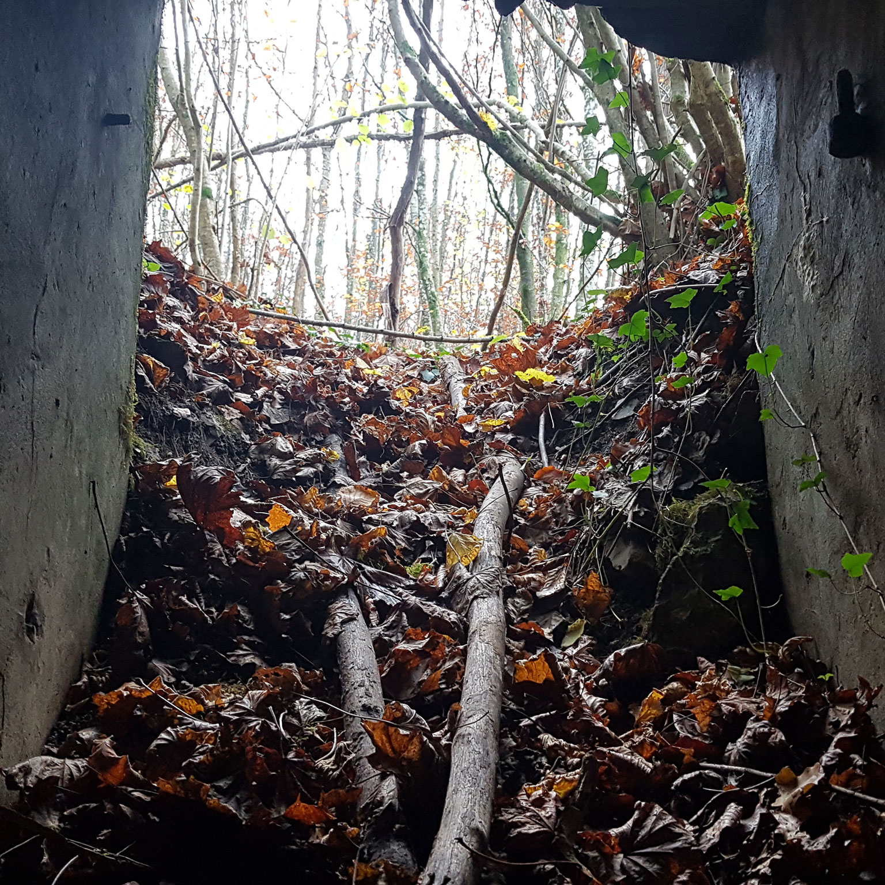
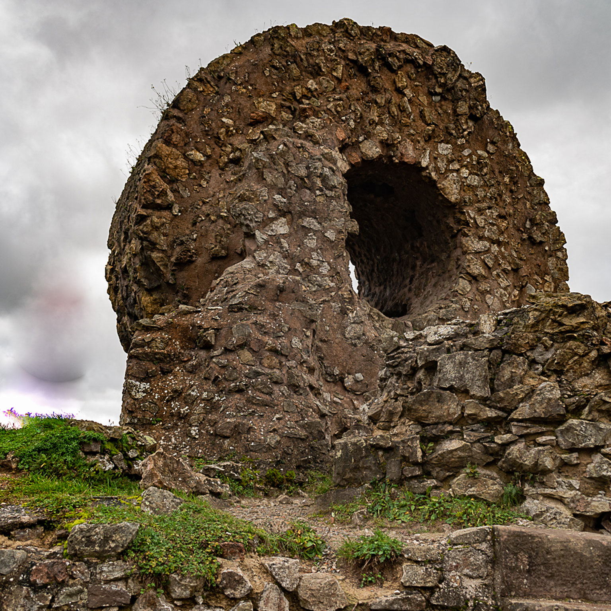
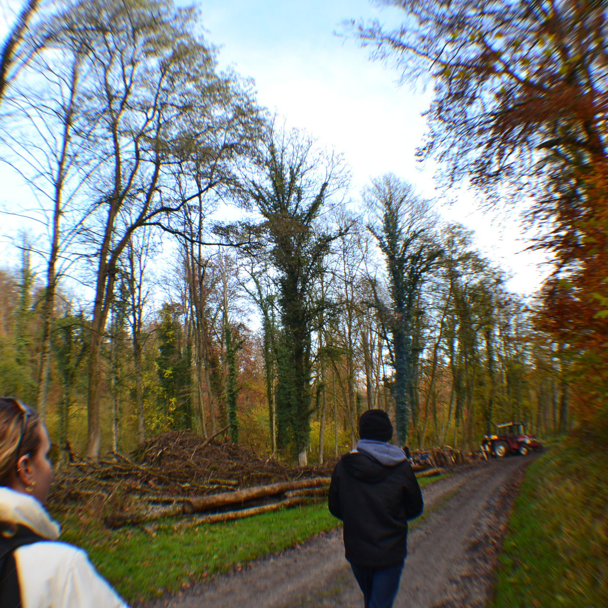
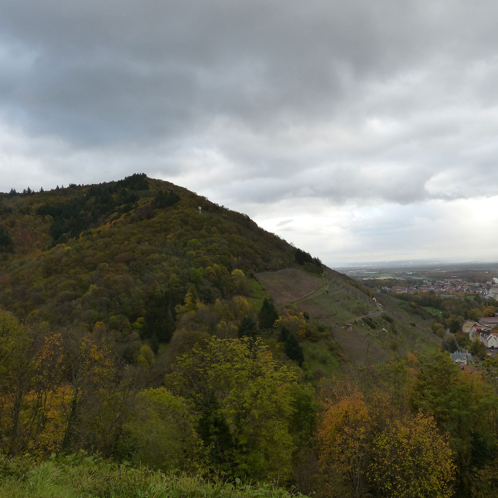
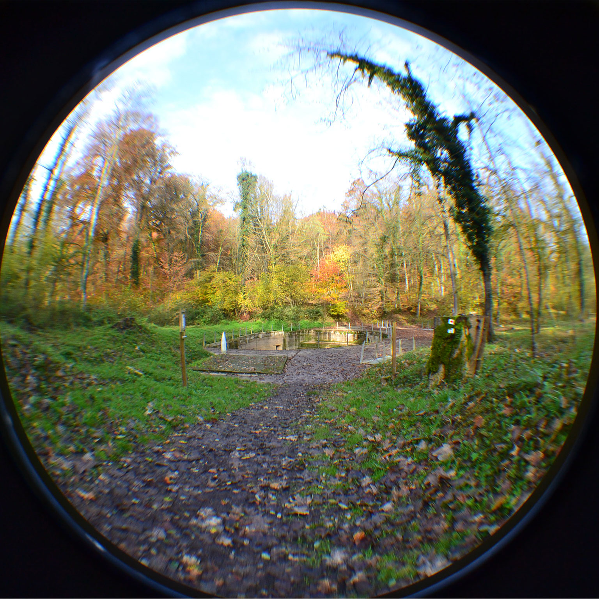
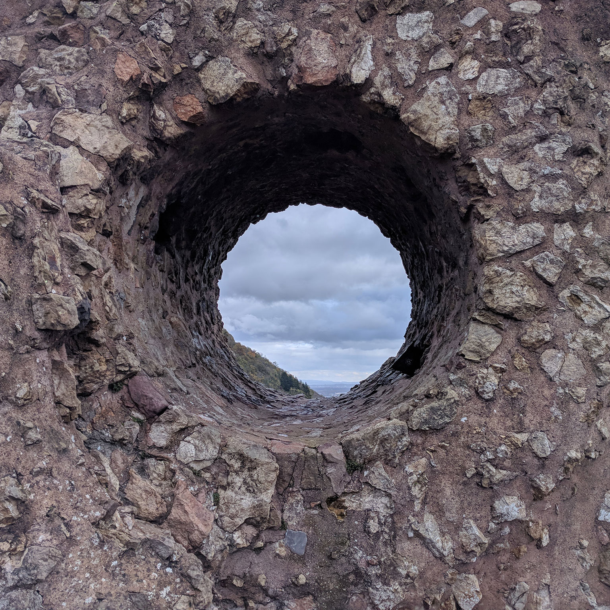
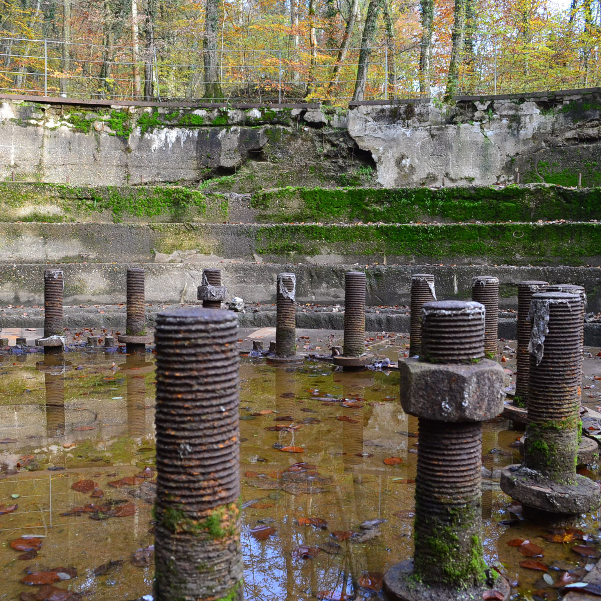
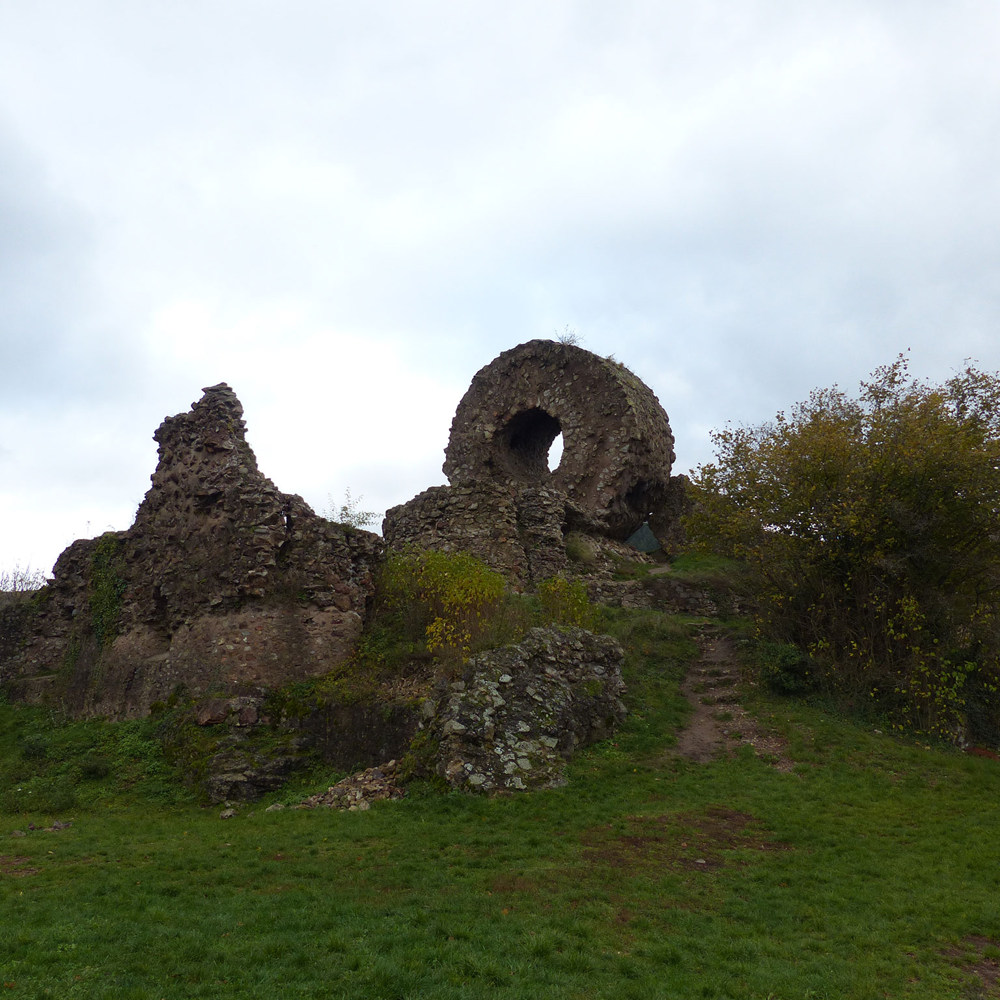

Les lieux insolites dans le Haut-Rhin
Accueil
Les parcours
Parcours Autour de Mulhouse
Les lieux insolites
Le Grand Canon
L'Oeil de la Sorcière
Accueil
Les parcours
Mulhouse et alentours
Les lieux
Le Grand Canon
L'Oeil de la Sorcière
Qui sommes-nous ?
Pourquoi les lieux insolites dans le Haut-Rhin ?
  
Nichés au cœur du Haut-Rhin, venez découvrir l'Histoire du département à travers ces lieux d'exception.

Parcours Mulhouse

Le Grand Canon

L'Oeil de la Sorcière

Bientôt...
...

...